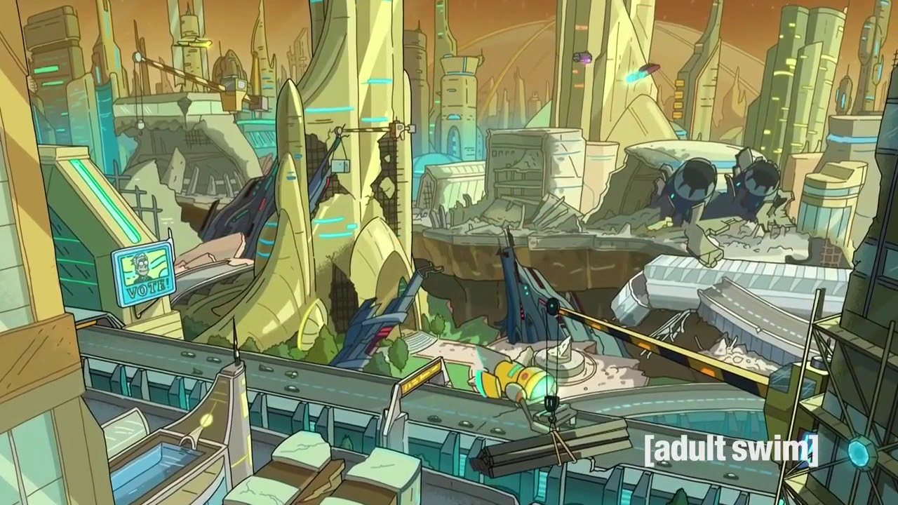

Personajes
Dentro de esta categoría puedes buscar el estatus de los personajes:
Especie:
Género:
Locaciones
En esta categoría puedes filtrar por:
Episodios

En esta categoría puedes buscar el número del episodio para saber qué personajes aparecieron en él: